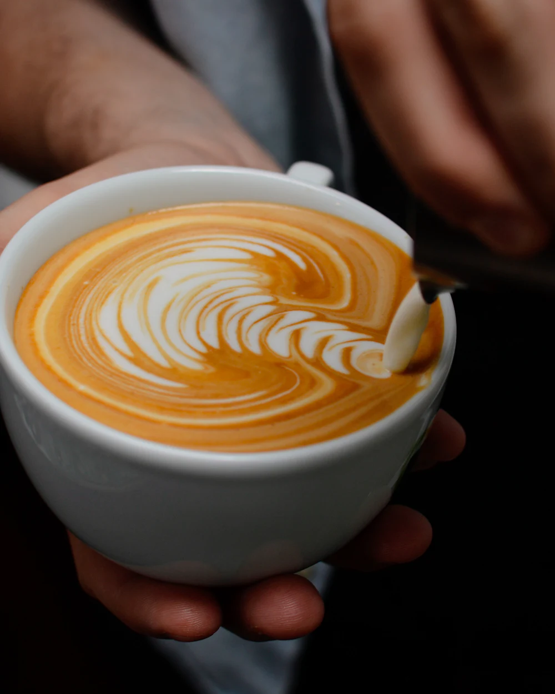
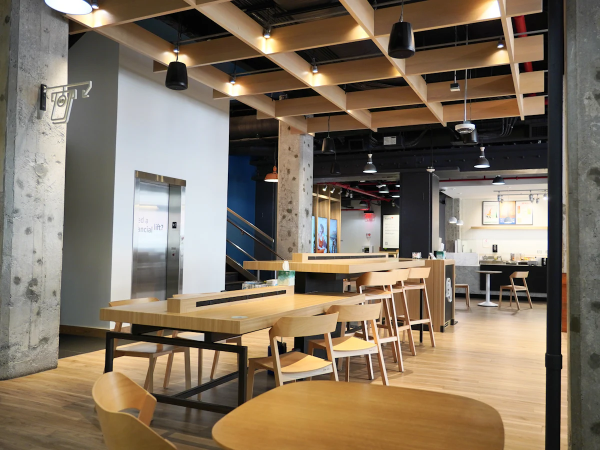
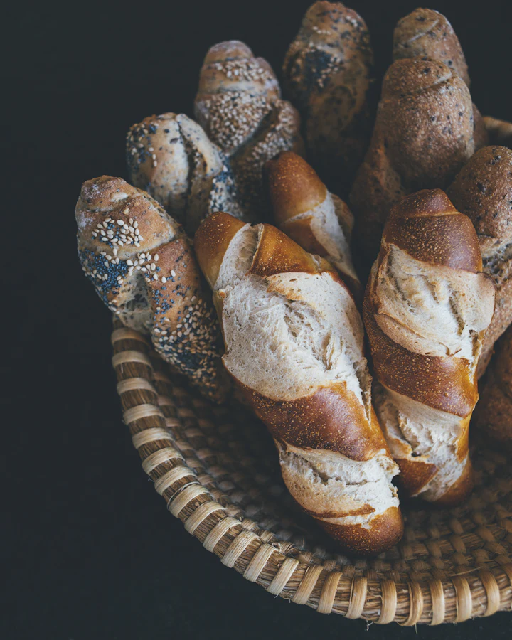
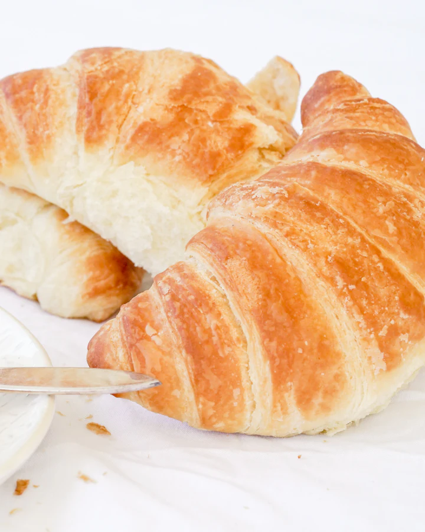

Torrefação & cafeteria · Feira de Santana — BA
Café do sertão, torrado devagar.
Grãos de pequenos produtores da Bahia, torra semanal em lotes pequenos e o bolo de milho que lembra a casa da vó. Escolha, monte seu pedido e mande direto no WhatsApp.
- Origens baianas
- 4
- Torra
- Semanal
- Desde
- 2019
- Chapada Diamantina BA
- Piatã BA
- Planalto da Conquista BA
- Barra do Choça BA
- Matas de Minas MG
- Cerrado Mineiro MG
- Caparaó ES
- Alta Mogiana SP
Assinaturas da casa
Três xícaras que explicam quem a gente é.
Receitas criadas no nosso balcão, com ingredientes do sertão baiano. Se é sua primeira vez aqui, comece por uma delas.
Cardápio
Feito hoje, servido agora.
Toque em Adicionar para montar o pedido. Você revisa tudo antes de enviar.

Nossa história
A Bahia planta café bom. A gente só tira do caminho.
O Café Sertão nasceu de uma pergunta simples: por que o melhor café da Chapada Diamantina viaja para o mundo inteiro e quase nunca chega à xícara de quem mora em Feira? Hoje compramos direto de seis famílias produtoras, torramos toda segunda-feira e servimos o que há de mais fresco.
Sem pressa, sem açúcar escondido, sem frescura. Só café com origem, comida de forno e gente que gosta de conversar.
Negócio fictício, criado para esta demo de portfólio.
Do grão à xícara, em três passos.
-
Origem
Compramos direto do produtor, pagando acima do mercado por lotes com nota acima de 84 pontos.
-
Torra
Lotes de 5 kg toda segunda. O perfil é ajustado para cada origem, nunca uma torra única para tudo.
-
Preparo
Receitas pesadas na balança e grãos moídos na hora. Café bom é repetível, não sorte.
Quem passa, volta
O que dizem no balcão.
-
“O latte de rapadura virou meu ritual de sexta. Tem gosto de infância, mas com café de verdade.”
Marina A.Cliente desde 2021 -
“Pedi pelo WhatsApp às 7h10 e às 7h25 estava na minha mão. O cold brew é absurdo de bom.”
Rafael S.Pede para retirar -
“Finalmente um lugar em Feira que explica de onde vem o café. E o bolo de milho com coalho… sem palavras.”
Joana P.Trabalha do salão às terças
Depoimentos ilustrativos.
Galeria do salão
-

-

-

Visite
Puxe uma cadeira.
O café já está passando.
Horários
Rua das Gameleiras, 123 — CentroFeira de Santana — BA, 44001-000
Endereço fictício Como chegar (abre o Google Maps em nova aba)